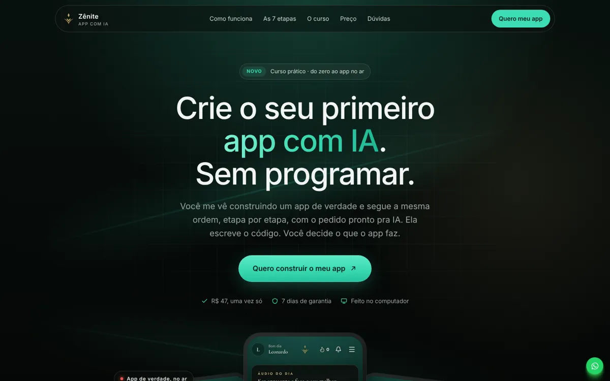
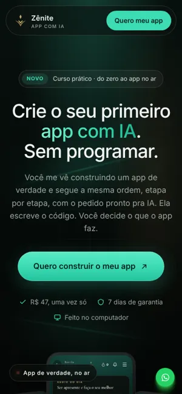

01
Escuro verde-neon
Fundo quase preto com grade sutil, destaque verde-água neon e celular do app subindo no rodapé do topo. Tom de produto de tecnologia.
- Fontes
- Inter
- Cores
#050605 #3DDBB4 #0F3B34 #C6A968 #EFEADF- Pasta
referencias/01-escuro-verde-neon